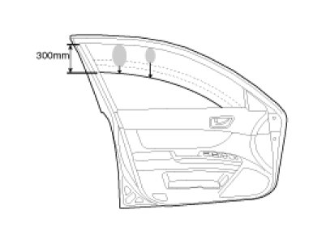
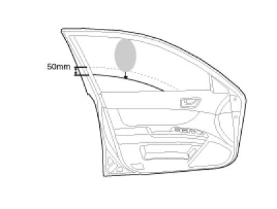
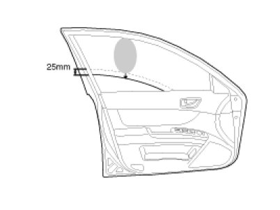
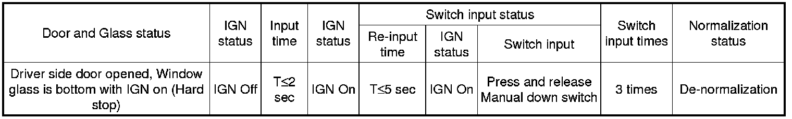

Windows: Description and Operation
Operation
Function Of Safety Power Window
When all door (Front, Rear) power window auto-up switch is operated, safety function is activated.
1. Safety function condition
When detect the force of 100N during the window rising, window is reversed.
2. Length of window reversing (except holding the auto-up switch)
A. When detect the jamming during the 4mm ~ 250mm from top of the door.
-> Window is reversed until 300mm from top of the door.

B. When detect the jamming over the 250mm from top of the door.
-> Window is reversed until 50mm from jamming position.
-> Window is reversed 50mm or bottom position in case of 50mm reversing distance.

C. When detect the jamming over 300mm from top of the door.
-> Window stops at reverse point.
3. Length of window reversing (holding the auto-up switch)
A. When detect the jamming during holding the auto-up switch.
-> Window is reversed until 25mm from jamming position.
B. Auto-up function is not available during the 5 seconds from above condition.
-> When holding the auto-up switch, window is operated as a manual-up function. (Safety function is not activated.)
C. When detect the jamming during holding the auto-up switch again.
-> Window is reversed until 25mm from jamming position.
D. When holding the auto-up switch after 5 seconds from above condition.
-> Window is reverse until 25mm from jamming position.

4. Safety function is not available area
Safety function is not available during the 4mm from top of the door.
Normalization (Teaching)
After power on reset or error detection, the motor has to be normalized at the fully closed position.
How to be normalized:
- Move the window upwards into the fully closed position. As the window reaches the fully closed position, hold the power window switch in auto for T≥2 seconds.
If the block is reconized, the system state turns to normalized.
Recall And Storing The Normalization (teaching) Information
ECU records the normalization information into the specified location in Flash ROM. (as long as Flash ROM page is valid)
- Storing conditions : Entering to sleep mode after valid switch input. Entering to low voltage(7.5V) after valid switch input.
- Recall conditions : Engine=ON or Power ON reset
Denormalization (Memory reset)
Under conditions below, ECU turns to denormalized status. After denormalization, auto up and safety function shall not be operated. In order to make these function active again, ECU should go through the normalization process.
- Denormalization conditions :
1. Continuous 15 times reverses
2. Power off during motor operation
3. Driver side door opened and window glass is at the bottom (hard stop position) with IGN on, IGN off -> within 2 sec, IGN on -> Press Manual Down switch 3 times within 5 sec -> De-normalization

Window Position Control
To detect the window position and direction of motor rotation, hall sensors are employed. ECU recognizes the fully closed position of the window and sets this relative window position value as "0". When the window goes downwards, based on the information from the hall sensor, the relative position value increments. On the contrary, when the window goes upwards, it decrements.
Thermal Protection
Thermal protection by software module is implemented to prevent from destruction of motor during overload condition. Motor temperature is estimated by integrating squared motor current as an estimate for heating power integral. When estimated motor temperature exceeds EEPROM programmable upper limit, motor is deactivated for fixed delay time (default value = 30 sec.)
Thermal shutdown during a window operation will not interrupt the operation due to safety reasons.
Operation Time Limiter
Maximal operation time of power window motor is limited to 15 sec (EEPROM programmable).